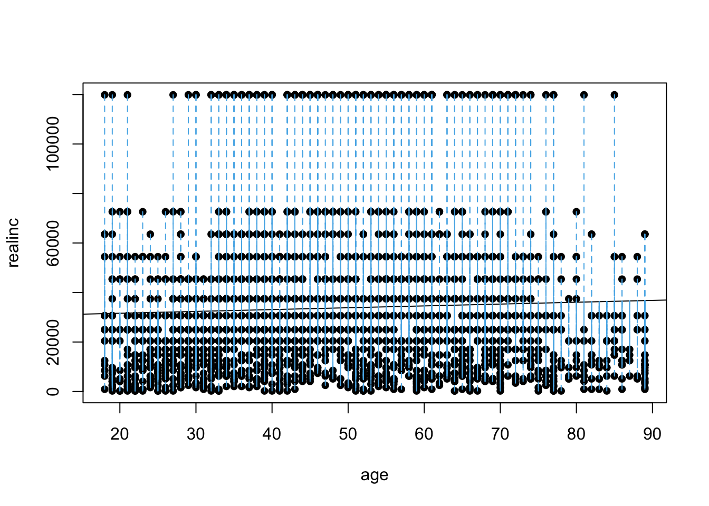
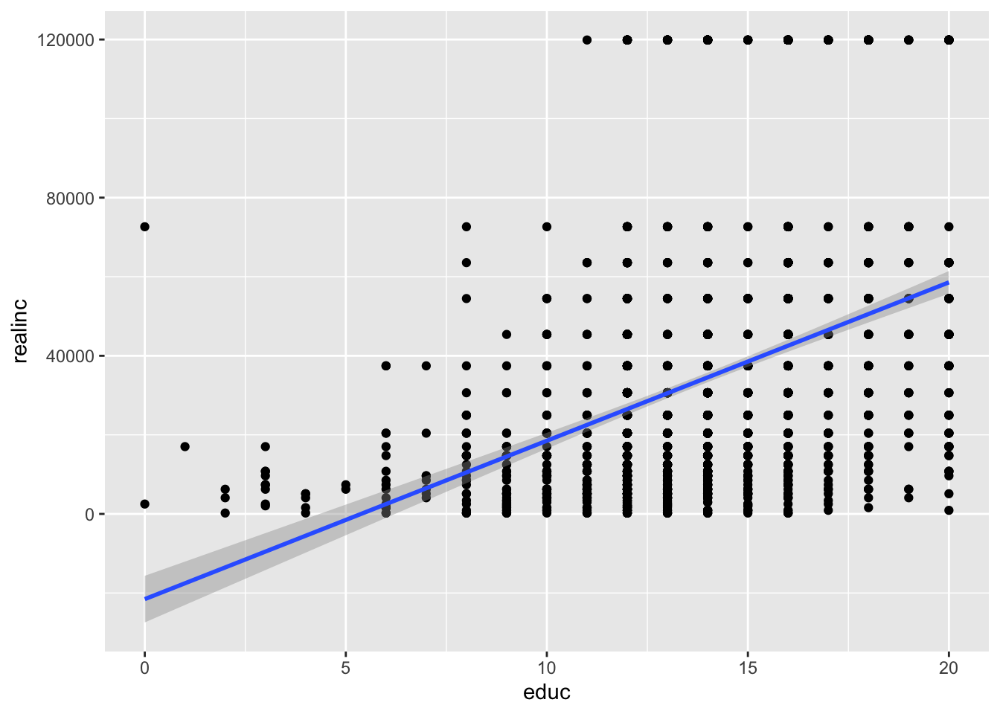

8 Machine Learning I: Linear and Multiple Regression
In machine learning, we use statistical and algorithmic methods to detect patterns in our data. There are, generally, three goals: the first is to describe or understand our data. What are the patterns? How can we make sense of them? The second is to model our data - that is to test a theory on our data about how it was generated and to evaluate the accuracy of that theory. Related, to two, the third goal is to make predictions - if our model is generalizable, then it should apply to other, similar situations. There are a number of strategies for identifying and modeling patterns in data.
In this regard, machine learning differs from more traditional ways of instructing computers on how to do things in that it provides a framework for the machine to learn from data on its own. We don’t have to type in what the machine should do at every step - it will be able to identify patterns using a model of choice across many different domains.
We will focus this week on Linear Regression, the most common strategy in the social sciences for modeling data.
8.1 More with the GSS
In the previous lab, we learned how to download data and visualize patterns between variables. In what follows, we will go beyond data visualization and begin to ask theoretically informed questions and using data, again, from the GSS, to answer those questions. Where before we plotted two variables against each other to see their relationship, linear regression will allow us to quantify their relationship: how much do changes in our explanatory variable lead to changes in the variable we are hoping to explain? Is this relationship statistically significant - that is, does it differ from what we should expect by chance?
Linear regression will also allow us to adjust for covariates - variables that may be affecting our primary dependent variable of interest as well as our independent variable. For example, in classic example of confounding, we may see that the number of ice cream cones people eat per year is correlated with the number of sunburns they get and think that ice cream causes sunburns. However, it is obvious that both of these factors will be influenced by how warm of a climate people live in - with people living in warmer climates consuming more ice cream AND getting more sunburns. By controlling for the warmth of the climate, we can adjust for this fact and likely any association we saw between ice cream and sunburns will go away.
8.2 How regression works
You may remember the slope-intercept form of writing the equation of a straight line from algebra. \[ y = mx + b \] Here, we can calculate the coordinate \(y\) for any \(x\) by first multiplying \(x\) by the slope of the line, \(m\), and adding the value of the intercept, \(b\), which is where the line intersects with the \(y\) axis.
Linear regression is a strategy for finding the line that best fits the relationship between two variables. We start with a y variable, also called the outcome or the dependent variable, and an x variable, also called a predictor or the independent variable, and ask what is the slope-intercept equation that most closely approximates their relationship. Given \(x\) and \(y\), linear regression therefore involves estimating the slope, \(m\), and intercept, \(b\), of the line.
Rarely in real world applications are two variables perfectly related to one another: even the best social science models have error. To reflect this, we update the equation above to:
\[ y = mx + b + ε \] With \(ε\) capturing the error in our predictions.
How do we fit a line to x and y? The short of it is that we will start with line (say, a horizontal one) and keep adjusting the slope and intercept of that line to minimize the average distance between the data points and the line itself. To see how this works, we can use the plot_ss function, taken from the statsr package. We will explore the relationship between age and income. Make sure you have the GSS data in your R environment.
First, run this to load the function into your R environment
plot_ss <- function (x, y, data, showSquares = FALSE, leastSquares = FALSE)
{
missingargs <- missing(x) | missing(y) | missing(data)
if (missingargs)
stop(simpleError("missing arguments x, y or data"))
xlab <- paste(substitute(x))
ylab <- paste(substitute(y))
x <- eval(substitute(x), data)
y <- eval(substitute(y), data)
data = na.omit(data.frame(x = x, y = y))
x = data[["x"]]
y = data[["y"]]
plot(y ~ x, data = data, pch = 16, xlab = xlab,
ylab = ylab)
if (leastSquares) {
m1 <- lm(y ~ x, data = data)
y.hat <- m1$fit
}
else {
cat("Click two points to make a line.")
pt1 <- locator(1)
points(pt1$x, pt1$y, pch = 4)
pt2 <- locator(1)
points(pt2$x, pt2$y, pch = 4)
pts <- data.frame(x = c(pt1$x, pt2$x), y = c(pt1$y, pt2$y))
m1 <- lm(y ~ x, data = pts)
y.hat <- predict(m1, newdata = data)
}
r <- y - y.hat
abline(m1)
oSide <- x - r
LLim <- par()$usr[1]
RLim <- par()$usr[2]
oSide[oSide < LLim | oSide > RLim] <- c(x + r)[oSide < LLim |
oSide > RLim]
n <- length(y.hat)
for (i in 1:n) {
lines(rep(x[i], 2), c(y[i], y.hat[i]), lty = 2, col = "#56B4E9")
if (showSquares) {
lines(rep(oSide[i], 2), c(y[i], y.hat[i]), lty = 3,
col = "#E69F00")
lines(c(oSide[i], x[i]), rep(y.hat[i], 2), lty = 3,
col = "#E69F00")
lines(c(oSide[i], x[i]), rep(y[i], 2), lty = 3, col = "#E69F00")
}
}
SS <- round(sum(r^2), 3)
cat("\r ")
print(m1)
cat("Sum of Squares: ", SS)
}plot_ss(x = age, y = realinc, data = gss)
## Click two points to make a line.
## Call:
## lm(formula = y ~ x, data = pts)
##
## Coefficients:
## (Intercept) x
## 30130.57 74.27
##
## Sum of Squares: 2.082262e+12After running this command, you’ll be prompted to click two points on the plot to define a line. Once you’ve done that, the line you specified will be shown in black and the residuals in blue. Note that there is one residual for each of the observations. Residuals are the difference between the observed values and the values predicted by the line:
\[residual_i =y_i−ŷ_i\] Linear regression will seek to minimize the sum of the squared residuals, also known as the sum of squares:
\[SumSquares = \sum_{i = 1}^{n} (y_i−ŷ_i)^2\]
Using plot_ss, try minimizing the sum of squares. To do so, run the function multiple times, keeping track of the sum of squares that it returns, and adjusting your line to make it smaller. What was the smallest value you could achieve?
8.3 Linear regression using the lm function
Thankfully, as computational social scientists, we won’t have to do this adjustment by hand. The lm function in R uses an algorithm, called gradient descent, to find the linear regression line that best minimizes the sum of squares for us.
m1 <- lm(realinc ~ age, data = gss)The first argument in the function lm is a formula that takes the form y ~ x. Here it can be read that we want to make a linear model of real household income as a function of age The second argument specifies that R should look in the gss data frame to find the age and realinc variables.
The output of lm is an object that contains all of the information we need about the linear model that was just fit. We can access this information using the summary function.
summary(m1)##
## Call:
## lm(formula = realinc ~ age, data = gss)
##
## Residuals:
## Min 1Q Median 3Q Max
## -36142 -21953 -8800 11184 88412
##
## Coefficients:
## Estimate Std. Error t value Pr(>|t|)
## (Intercept) 30130.57 1968.22 15.309 <2e-16 ***
## age 74.27 37.87 1.961 0.05 *
## ---
## Signif. codes: 0 '***' 0.001 '**' 0.01 '*' 0.05 '.' 0.1 ' ' 1
##
## Residual standard error: 31160 on 2145 degrees of freedom
## (201 observations deleted due to missingness)
## Multiple R-squared: 0.00179, Adjusted R-squared: 0.001324
## F-statistic: 3.846 on 1 and 2145 DF, p-value: 0.04999Let’s consider this output piece by piece. First, the formula used to describe the model is shown at the top. After the formula you find the five-number summary of the residuals. The “Coefficients” table shown next is key; its first column displays the linear model’s y-intercept and the coefficient of age. With this table, we can write down the least squares regression line for the linear model:
\[ŷ=30130.57+74.27∗age\] It also shows whether the coefficients, here, age, have are statistically significant in predicting the outcome, income. Normally, a p-value cut-off of 0.05 is used to determine statistical significance - here, age’s p-value is almost exactly 0.05 (in fact, it is very slightly lower) and is therefore significant.
One last piece of information we will discuss from the summary output is the Multiple R-squared, or more simply, R2. The R2 value represents the proportion of variability in the response variable that is explained by the explanatory variable. For this model, only %.18 of the variability in income is explained by age.
What variables might do a better job of explaining income? Let’s try years of education, which is the variable educ in the gss.Using the estimates from the R output, write the equation of the regression line. What does the slope tell us in the context of the relationship between income and education?
m2 <- lm(realinc ~ educ, data = gss)
summary(m2)##
## Call:
## lm(formula = realinc ~ educ, data = gss)
##
## Residuals:
## Min 1Q Median 3Q Max
## -57666 -18112 -6093 10864 97362
##
## Coefficients:
## Estimate Std. Error t value Pr(>|t|)
## (Intercept) -21552 3006 -7.171 1.02e-12 ***
## educ 4006 213 18.809 < 2e-16 ***
## ---
## Signif. codes: 0 '***' 0.001 '**' 0.01 '*' 0.05 '.' 0.1 ' ' 1
##
## Residual standard error: 28880 on 2149 degrees of freedom
## (197 observations deleted due to missingness)
## Multiple R-squared: 0.1414, Adjusted R-squared: 0.141
## F-statistic: 353.8 on 1 and 2149 DF, p-value: < 2.2e-16\[y=-21552+4006∗educ\]
The higher one’s education, the higher one’s income, generally. Specifically, the slope tells us that for every year of education, a person is expected to see an additional income of 4006 dollars. Further, the intercept tells us that people with 0 years of education are expect to have an income of -21552 dollars. Of course, this is an extrapolation, produced by the linear regression: an income of negative dollars doesn’t make much sense. Finally, we can see from the regression output that the R2 for education is much higher than age: 11%!
8.4 Prediction and prediction errors
Let’s create a scatterplot with the least squares line laid on top.
library(ggplot2)
ggplot(gss, aes(x = educ, y = realinc)) +
geom_point()+
geom_smooth(method='lm', formula= y~x)## Warning: Removed 197 rows containing non-finite values (stat_smooth).## Warning: Removed 197 rows containing missing values (geom_point).
8.5 Multiple Regression
We can build more complex models by adding variables to our model. When we do that, we go from the world of simple regression to the more complex world of multiple regression.
Here, for example, is a more complex model with both of the variables we examined above.
m3 <- lm(realinc ~ age + educ, data = gss)
summary(m3)##
## Call:
## lm(formula = realinc ~ age + educ, data = gss)
##
## Residuals:
## Min 1Q Median 3Q Max
## -60809 -19200 -6908 10063 99951
##
## Coefficients:
## Estimate Std. Error t value Pr(>|t|)
## (Intercept) -25708.70 3481.35 -7.385 2.18e-13 ***
## age 83.51 35.11 2.378 0.0175 *
## educ 4012.21 212.96 18.840 < 2e-16 ***
## ---
## Signif. codes: 0 '***' 0.001 '**' 0.01 '*' 0.05 '.' 0.1 ' ' 1
##
## Residual standard error: 28870 on 2143 degrees of freedom
## (202 observations deleted due to missingness)
## Multiple R-squared: 0.1436, Adjusted R-squared: 0.1428
## F-statistic: 179.7 on 2 and 2143 DF, p-value: < 2.2e-16What do we learn? How does the Multiple R-Squared look compard to previous models? Did we improve our model fit? By including both variables, the coefficients now tell us the effect of each variable, conditional on the other. For example, age and education are correlated in complex ways. Younger generations are slightly more educated than older generations. At the same time, being older gives you more time to achieve an education. Controlling for age allows us to interpret education without worrying that age effects of this sort are driving the relationship between education and income. That said, after age is controlled for, while R2 improves, the coefficient size for education stays roughly the same.
8.6 Prediction
Finally, imagine that you want to predict your own income when you graduate in the coming years using this model. Let’s collect data on what your age and education will be at the time of graduation and use the line to predict your future income. First, we create a data.frame with the necessary data.
you <- data.frame(Name = "YOURNAMEHERE", age = 22, educ = 16)View(you)As long as a data.frame has the same variables as those in a model, we can use the predict function to predict the expected outcomes of the respondents in the data.frame using the model. What is your predicted income?
predict(m3, you)## 1
## 40323.84To get a better prediction, more tailored to you and your background, we would need a more complex model with more variables!